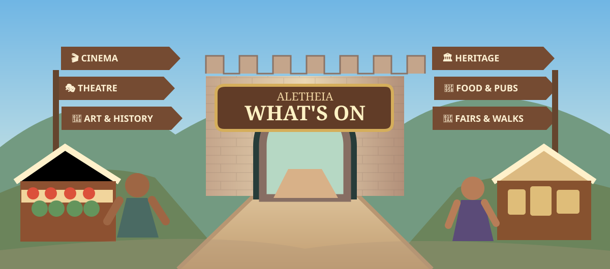

Where are you?

Everything is searched. Select topics to show them first.
Enter a place, discover its stories, people, markets and hidden corners.
Discover what's happening, where to go and what makes a place special, anywhere in the world.
You can change it to any destination.
Your AI searches live sources after you paste and send. This page itself does not claim to check listings.
Settings (optional)
Download uses your browser's normal Downloads handling. Import is always your choice; this site cannot scan your Downloads folder.
Explore cinemas, theatres, concerts, museums, art, history, churches, viewpoints, walks, food, pubs, shopping, gyms, fairs, festivals and local tourist sites. Start broad, then ask the AI about anything that catches your eye.
Travel books & visitor resources · Portable AI instructions · How this page works